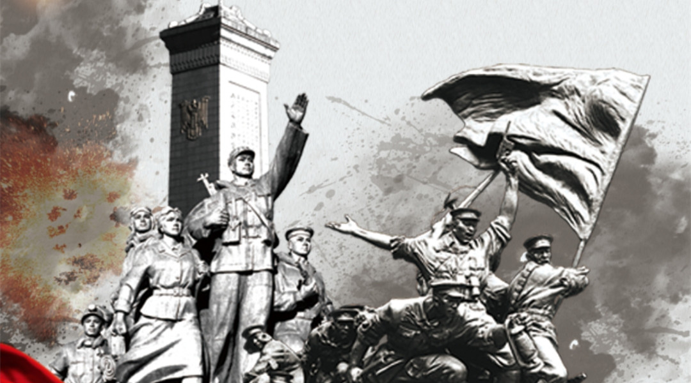
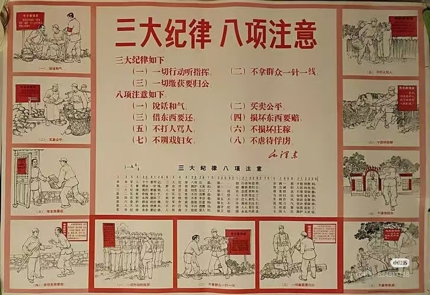

三湾改编的主要内容
三湾改编是中国共产党建设新型人民军队的重要开端，主要包含以下核心内容：
1. 支部建在连上
毛泽东在三湾改编中创造性地提出了"支部建在连上"的原则，这是三湾改编最核心的内容之一。具体措施包括：
- 1.在连队建立党支部，每个连设党代表
- 2.营以上设立党委，全军由党的前敌委员会统一领导
- 3.从班长、排长、连长、营长到党代表层层设立党的组织

"支部建在连上"的制度，确立了党对军队的绝对领导，使人民军队有了坚强的政治核心，从根本上改变了旧式军队的性质。
2. 官兵平等
为了消除旧式军队的军阀主义作风，毛泽东提出了官兵平等的原则，主要措施包括：
- 1.取消军官的特殊待遇，军官和士兵吃一样的饭菜
- 2.建立士兵委员会，参与军队的民主管理
- 3.实行经济公开，士兵可以监督军官的经济开支
- 4.禁止打骂士兵，提倡官兵之间的平等关系

官兵平等的制度，极大地提高了士兵的积极性和主动性，增强了军队的凝聚力和战斗力。
3. 缩编部队
为了提高部队的质量和战斗力，毛泽东对部队进行了缩编：
- 1.将原来的一个师缩编为一个团，番号为中国工农革命军第一军第一师第一团
- 2.淘汰了一些不坚定的分子，保留了革命骨干
- 3.精简了机关，充实了连队

4. 建立严格的纪律
三湾改编还建立了严格的纪律制度：
- 1.规定士兵必须遵守纪律，听从指挥
- 2.禁止侵犯群众利益，实行"三大纪律、六项注意"的雏形
- 3.建立了奖惩制度，鼓励士兵英勇作战

这些措施使中国工农革命军成为一支新型的人民军队，为中国革命的胜利奠定了坚实的基础。